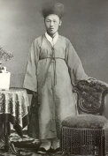
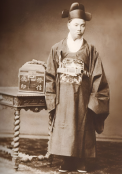
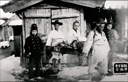
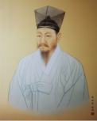
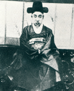

1번
다음 인물들이 주장한 내용으로 알맞은 것을 모두 고르세요.
일본과 협력하는 사람들을 처벌하고
일본의 지배로부터 벗어나야 한다.

1
김옥균(급진개화파)
청과의 관계를 유지하면서
서양의 문물을 받아들여야 합니다.

2
김홍집(온건개화파)
탐관오리를 처벌하고
외세의 침략을 물리쳐야 한다.

3
전봉준
개항과 통상을 해서는 안 되며
외국 세력을 몰아내야 한다.

4
정약용
청의 간섭에서 벗어나
서양의 사상과 제도를 받아들여야 한다.

5
흥선대원군